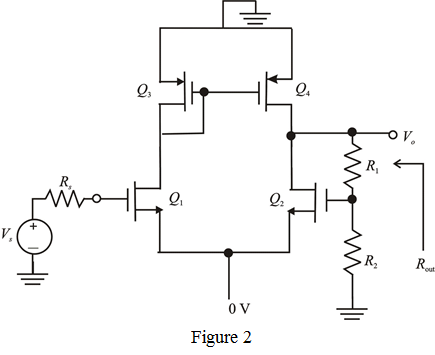

Step 1:
Refer to the circuit diagram of active-loaded differential amplifier in Figure P10.39 in the textbook.
(a)
An increase in the input voltage  causes an increase in the small-signal output voltage of the differential pair stage. Thus the feedback is negative.
causes an increase in the small-signal output voltage of the differential pair stage. Thus the feedback is negative.
Step 2:
(b)
The dc voltage at the gate of transistor  is same as the dc voltage at the gate of transistor
is same as the dc voltage at the gate of transistor  .
.
Thus, the dc voltage at the gate of transistor  is .
is .
Thus, the dc voltage at the output is: .
Step 3:
(c)
Draw the A-circuit for the series-shunt amplifier.

Step 4:
Write the expression for the gain A.
…… (1)
Here
Trans-conductance  is,
is,

Output resistance  is,
is,
Substitute  for
for  and for
and for  in the equation.
in the equation.
Thus, the expression for gain  is .
is .
Step 5:
Recall the expression for gain  .
.
Resistors
Over drive voltage .
Early voltage .
Substitute corresponding values.
Thus, the gain of the amplifier  is .
is .
Step 6:
(d)
The feedback factor  is,
is,
Write the formula for gain with feedback.

The closed-loop gain,
Substitute  for
for  and for
and for  in the equation.
in the equation.
Solve for resistor  .
.
Calculate the other resistance  .
.
Thus, the resistances in the voltage divider circuit are: and .
Step 7:
(e)
Calculate the output resistance.
Simplify further to obtain the output resistance.
Step 8:
Calculate the output resistance with feedback.
The output resistance,
Thus, the output resistance of the amplifier is: .
Step 9:
(f)
It is given that the load resistance,
Write the expression for the gain of the amplifier.
Thus, the total gain of the amplifier is .
Step 10:
(g)
Write the expression for the gain of the amplifier with load resistance included in the circuit.
Simplify further to obtain the gain.
Feedback factor is,
Calculate the gain with feedback.
Thus, the gain with feedback  is which same as that is found in (f).
is which same as that is found in (f).